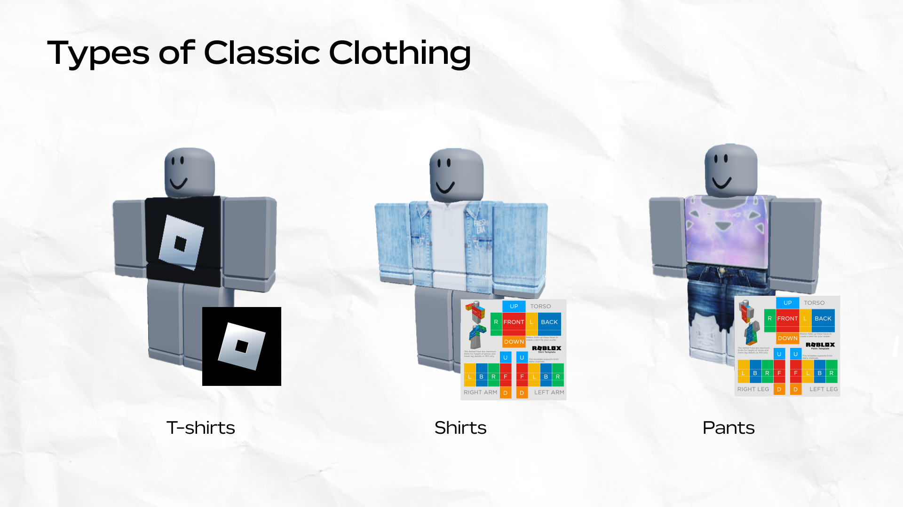
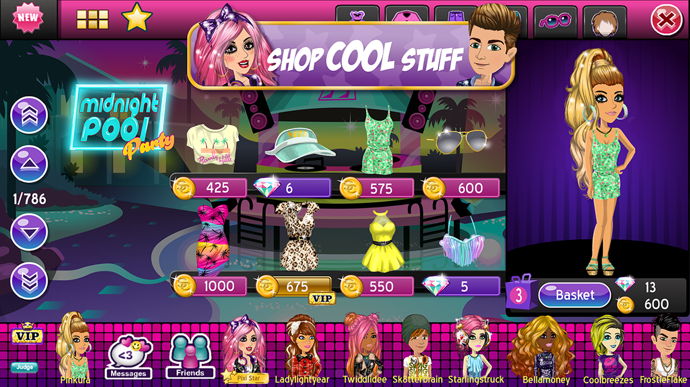

Prompt 2
Design: What elements of this technology’s design could raise ethical or moral concerns? How can such concerns be addressed?
Some of the biggest concerns with Roblox are based on the access minors have on the site. A major issue is with children developing bad habits or being exposed to inappropriate content based on what they see in the games they play. The biggest concerns specifically go into the sexual predators who could be preying on naive children, content made by adults that is inappropriate for children, and exposure to bad habits such as gambling or illegal activity. Many parents have publicly raised concerns about the safety, and there have even been lawsuits and new regulations put in place to protect children from the online dangers present on Roblox.
A USA Today article dives into how a mother’s 13-year-old daughter, as well as other children, were exploited by child predators over promises of friendship and Robux. Her child had met someone on Roblox who convinced her to move off the platform and onto Discord to send him sexual videos and pictures. The predators on the site gain easy access to children and pose as minors as well to gain trust. The article mentions one of Roblox’s newest safety features for estimating users' ages to use the public chat feature. They also deep dive into another article made by them about how the feature isn’t as accurate for older users(18+ and especially 40+), but it’s very accurate for younger users. They also mention the privacy concerns that people may have about ID submission and the potential of leaks by stating that they are only for the “one-time age estimation [and] are immediately deleted.”
The mention made by the CEO of just not using chat features is a good suggestion in theory, but in practice, it can't necessarily be properly regulated. For parents of young children, it should definitely be a worry for them to have when it comes to ensuring their children are safe online, and it's possible they shouldn't allow it at all because of the possible dangers. Roblox has chosen to implement a plan to help resolve those worries with their new age check feature. It allows accounts that are in certain age groups to only be able to chat with those in their age group and users in similar groups. It will not allow those who are too old or too young to chat with users in a specified age group. They also have implemented that users without parental consent aren't able to chat in-game if they are under the age of 9 or do any direct messaging if they're under the age of 13. The article on the safety walkthrough the journalist had at Roblox HQ also further talks about the parental controls available on the Roblox app. Roblox also has, for the "experience chat," the ability to filter any inappropriate content or personally identifiable information. Any words that are blocked by the filters will show up as hashtags for any users right after someone hits send. They could also be "automatically rephrased in a safe and civil way" so that conversations can still happen. Depending on the age of the user, there will be different filters for chats so that they aren't exposed to any inappropriate content. Those who are 18+ are able to be more exposed to it and use strong language as long as they continue to comply with their community standards.
Digital identity: How could the use of this technology shape people’s digital identities? What are the implications of integrating this technology into people’s lives?
People have been creating digital identities in online video games for many years. Whether it was with a gamer tag or profile customization, it's always been around and has greatly increased with the amount that can be done. Roblox offers so much customization, allowing users to create their own digital identity and show who they are online. With it being a free platform for all ages, it's possible that a user will start to make it at an early age, and it could stick with them throughout their life. That creative side of digital identities is what Roblox wants to help users blossom, but there's also the more technical side that involves all of the different metadata attached to each account. Specifically, a username, email address, a password, and even possibly a phone number for 2-factor authentication. The focus in Roblox is on the creative parts of a digital identity, which can translate to many other platforms. For me personally, I've usually had the same few usernames growing up, and it started from some of the first profiles I made, which included Roblox. It's branched out and grown into my own digital identity, which I now use on multiple platforms, and it's a name that my online friends know me by. I think it's completely shaped my digital identity, and it's now who I am online.

With the creative parts of Roblox, the ability for users to customize their avatars is a major feature. It's always been something that drew me into various platforms such as Movie Star Planet. Movie Star Planet is another platform that has a lot of customization, but its focus and overall theme are very different compared to Roblox. Roblox has a lot more customization available now compared to back when I first started playing in 2011, and they still have the options of some of the "older" customization features that are now called 2D clothing. It has overall led to so much more customization available for users over the years and has allowed users to create their own designs to share with other players online. Especially compared to over a decade ago, when the developers were mainly the only ones allowed to make catalog items for users to buy for customization.

With the integration of Roblox, there can be many positives and negatives. There has always been the issue with children and screen addiction and the negative effects it can have on the developing brain, as well as the fact that Roblox isn't necessarily the most educational piece of digital technology out there. A piece by Missouri Medicine on PubMed Central goes into how screen time can have a harmful effect on people. Specifically looking at children, they saw symptoms of depression and anxiety in those with higher screen exposure. They also talk about how high levels of screen use are "difficult to avoid in the post-pandemic world," which isn't uncommon to hear about, and Roblox has been one of the online activities that brought people together when they were stuck at home. Screen addiction has definitely been a major effect on people since the pandemic happened and has become a problem for many people, which has led to the development of ways to combat it.
There are some positives to Roblox being integrated into people's lives because it allows for a lot more social interactions. Being able to interact with others in online spaces, or even friends from school, can be very beneficial for people. It allows people to have something to do as well as talk with their friends to keep up the social interactions that they might be wanting from the comfort of their homes. That could also play a role in screen addiction because the convenience and ease of just hanging out with people online at home can be much more tempting than going out and doing things in person. As well as the possibility of any form of video game addiction, where the temptation to play games outweighs the desire to do anything else. There are many benefits to Roblox being integrated into our lives, and even for daily interaction, but there are also things that need to be looked out for to ensure it is used and consumed at a reasonable rate.
Privacy/Surveillance: What are the privacy issues that can arise through using this technology? How can these privacy issues be addressed?
Many privacy issues can be present due to the public chat feature that is available, as well as private messaging. There can also be data leaks due to how many people use the platform and the high possibility of hackers wanting to target a platform that is so popular and makes a lot of money. A lot of privacy concerns are in relation to their younger users as well, because they can much more easily leak private information that they shouldn’t be sharing online.
Roblox’s privacy policy help page features a whole section for users who are under 13 or parents of under-13-year-olds. They mention how their filtering system works when it comes to things that are personal, such as phone numbers or addresses. They also talk about what happens with the information that gets collected by users through the signup and security processes. Their process for purchases made on Roblox is really important as well, because that can be a major concern for parents who make purchases for their children. I’ve heard of instances before with children being able to purchase Robux without their parents knowing, due to them having previously saved a card or payment method on their account. The policy also talks about what can be posted on the different Roblox services depending on the user’s age. It also goes into the voice chat features that are monitored by Roblox automatically to ensure that users playing are safe. Their section about “when we share your information” is really crucial for knowing how users’ information is stored. It’s about what they do with cookies and any personal information, and it seems like they share it with a lot of large corporations, but they’re specifically for the tasks that they were hired for.
On their safety features page, they feature a whole section about chatting precautions that they take for protecting younger users from harmful language, as well as any filters and features that are made for users 13+ and 18+. On another page about safety and civility, they mention in their privacy section how the personal data of users under 13 isn’t shared with 3rd parties if it is not permitted by COPPA. I think that’s a very important thing to mention as well, because in the privacy and cookie policies section, they talk about how they had shared information in different ways for the companies that do business with Roblox, as well as creators who do the “experience” events that they have. It’s definitely something that should be much more of a concern for people who use big online platforms due to how much information companies can easily take from us without us even thinking about it.